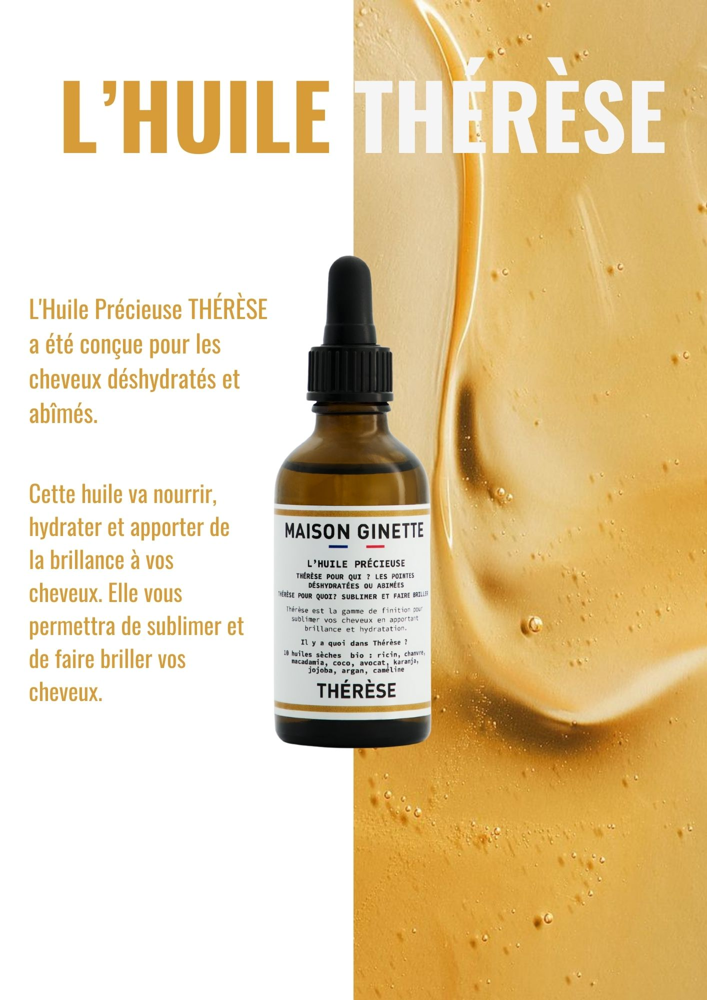
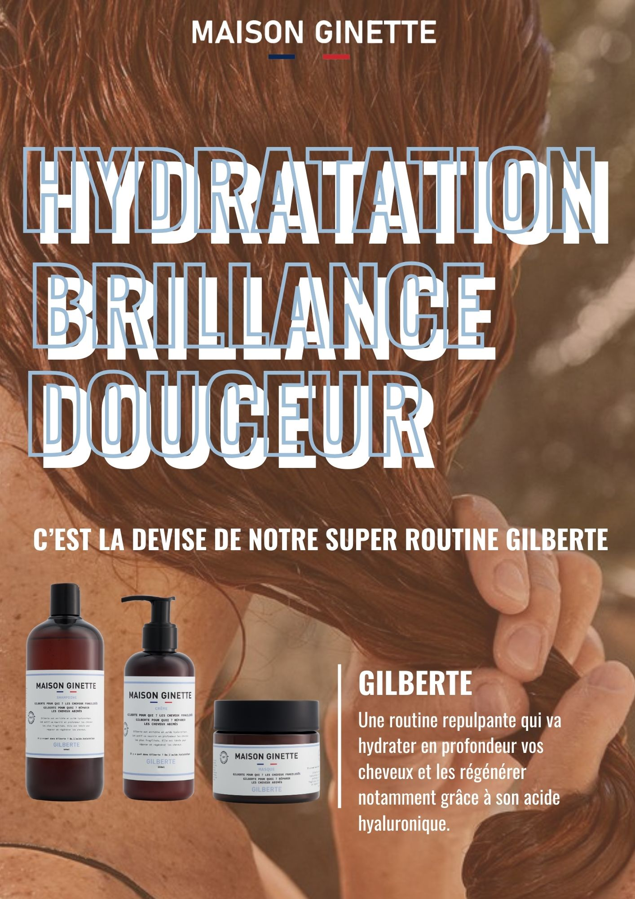
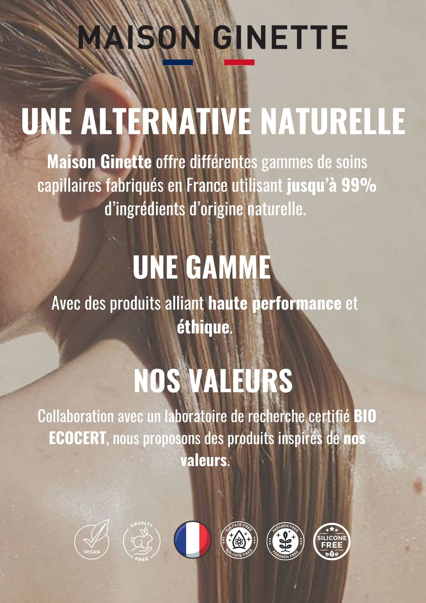
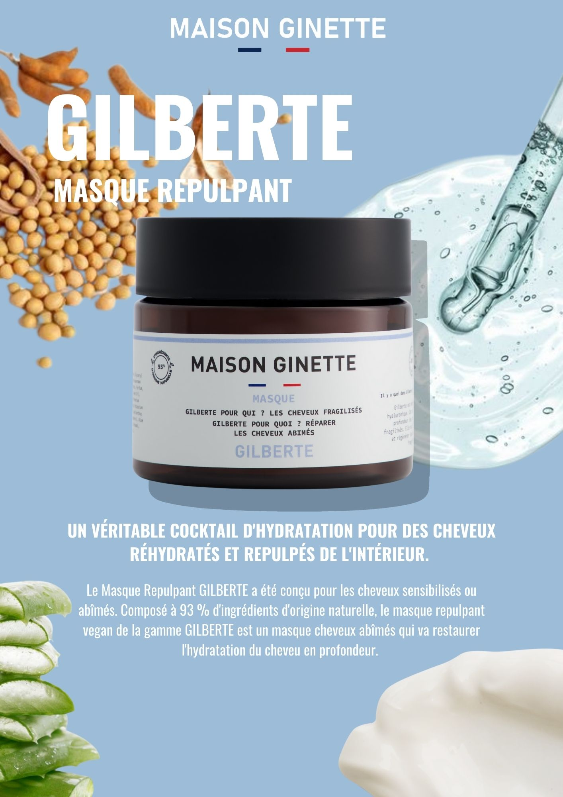

Affiche présentation de la nouvelle huile cheveux de la marque

Affiche présentation d'une gamme de produits pour cheveux secs

Affiche présentation d'une gamme de produits pour l'hydratation des cheveux

Affiche PLV qui décrit l'éthique de la marque

Affiche présentation d'une gamme de produits pour cheveux bouclés

Affiche PLV d'un masque pour l'hydratation des cheveux